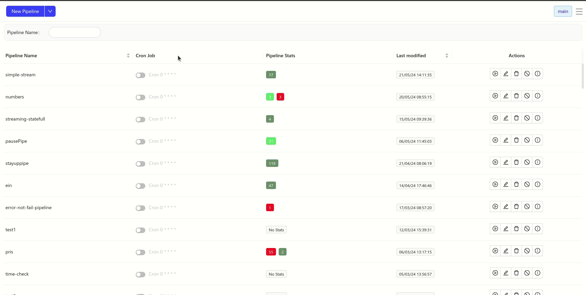

While Batch processing is need for some cases, such as gathering and data enrichment, there are other cases where the data is generated continuously, which typically send in the data records simultaneously. Streaming data includes a wide variety of data such as log files generated by customers using your mobile or web applications, eCommerce purchases, in-game player activity, information from social networks, financial trading floors, or geospatial services telemetry from connected devices or instrumentation in data centers.
HKube's data streaming is an extension to HKube batch processing pipeline architecture that handles millions of events at scale,
In real-time. As a result, you can collect, analyze, and store large amounts of information.
That capability allows for applications, analytics, and reporting in real-time.

So what are HKube data streams good for? Let's take a look at a stream from Twitter as an example. In this particular case, we want to enrich the data from other resources, such as Facebook, LinkedIn, and other internal databases before saving it. The process is as follows:
To create a stream, you will have to create a new pipeline. To make life easier, HKube offers an easy wizard to create a pipeline. There is also an option to enter json file text editor. In the wizard, you have 3 steps:

HKube streaming pipeline uses Stateful and Stateless algorithms, and supports:
HKube has its own data transportation system, enabling direct data transfer between nodes in a manner that ensures the following
The throughput of streaming can vary over time, allowing us to handle bursts and free up resources for other jobs when they are not needed. With its own unique heuristic system, HKube is able to recognize changes in throughput and act quickly to support these needs. To better understand this, let's look at a scenario that demonstrates how HKube handles pressure.
Autoscaling is used by each node by adjusting the number of pods it uses within the specified min-max range. By using autoscaling, we shut down unnecessary pods to maintain efficiency. HKube allows to adjust the minimum and maximum number of pods for stateless node:
Minimum:
Maximum:
HKube shows detailed statistics on the flow between a pair of nodes, which can be used to analyze the relationships between them. To view the statistics, place your cursor over the flow between the nodes. By using the statistics, you can obtain data about the requests and responses, as follows:
The following are statistics that are relevant to the recieving node:
The following are statistics that are relevant to a stateless node:

In streaming data, most of the time, we expect the data to follow a specific flow. However, there are scenarios where we need to dynamically change this flow. To illustrate, let's consider the Twitter use case: typically, we aim to enrich the data with additional information from other resources. However, there may be instances where we are unable to identify the author of a post. In such cases, we need to establish additional prerequisites before proceeding with the enrichment. HKube assists in handling such situations with conditional data flow. We will explain how to create and work with this feature later.
Streaming pipelines are built from Stateful and Stateless algorithms.
Streaming flows are defined using a simple syntax: >> is used for defining a streaming node flow, & for "and," and | for different streaming flows. Examples:
Flow named "flow1" streams from node A to nodes B and C, and node B streams to node D. Syntax: A >> B&C | B >> D.
{ "streaming": { "flows": { "flow1": "A >> B&C | B >> D", }, "defaultFlow": "master" } }

Flow named "analyze" streams from node "sort" to node A. Syntax: sort >> A. Also, flow named "master" streams from node "twitt" to node "sort," which then streams to node B. Syntax: twitt >> sort >> B.
{ "streaming": { "flows": { "analyze": "sort>>A", "master": "twitt >>sort>>B" }, "defaultFlow": "master" } }

If you are experiencing slower algorithm allocation in streaming pipelines, these algorithms have a special priority setting. To use it, you need to set the stateType in your algorithm spec to either stateless or stateful.
When set:
- Stateful - A Kubernetes Job is created and launched immediately. These jobs are given the highest priority and start execution right away.
- Stateless - Jobs are launched after all stateful ones.
Example for algorithm spec:
{ "name": "stateful-alg", "cpu": 1, "gpu": 0, "mem": "256Mi", "stateType": "stateful", "algorithmImage": "hkube/algorithm-example-python" }
registerInputListener(onMessage=handleMessage)
startMessageListening()